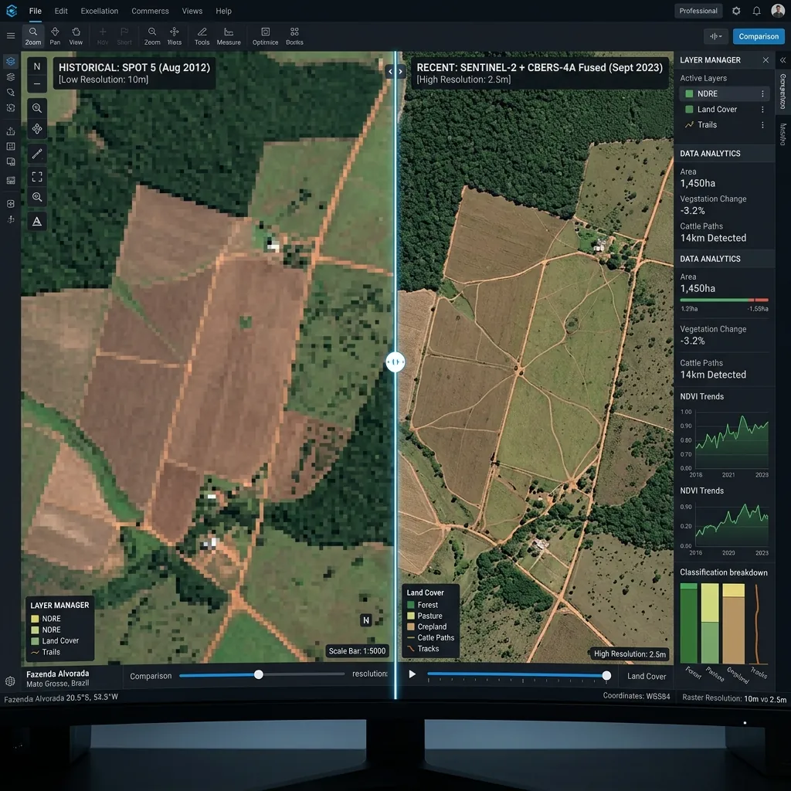
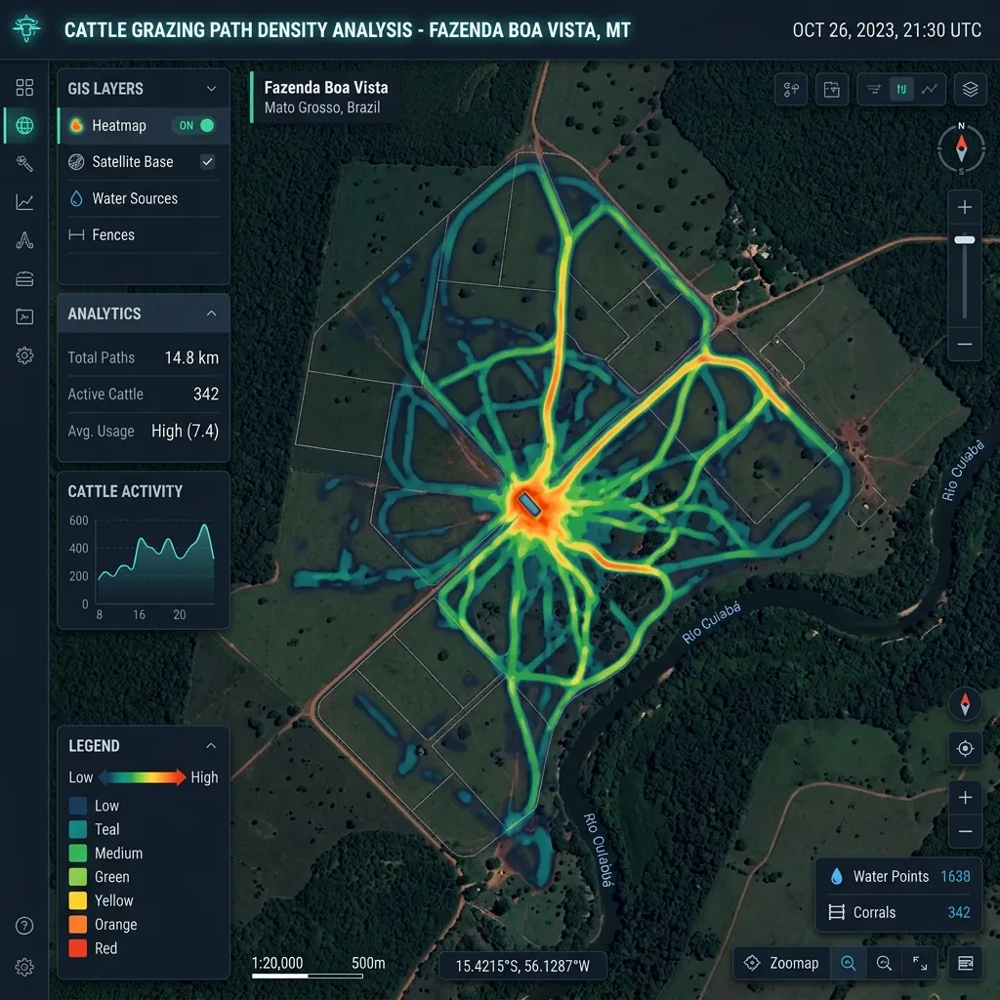

A Ciência da Posse: Como o Big Data revela o rastro do gado onde o olho humano falha
André Ricartes
Especialista em Geointeligência Rural
Introdução: Além do que os olhos podem ver
Muitos acreditam que comprovar a posse de uma área de pastagem por imagens de satélite exige "enxergar o boi". Na prática da Geointeligência, sabemos que isso é um mito técnico. A verdadeira prova não está no objeto, mas na dinâmica do uso do solo ao longo do tempo.
A Inércia Produtiva, um conceito essencial em nossas análises, demonstra como a atividade histórica contínua altera permanentemente a assinatura espectral do terreno, servindo como uma evidência imutável para a regularização fundiária.
Neste artigo da vertente de Inteligência Territorial, detalho a metodologia utilizada na análise de uma fazenda no Pantanal do Paiaguás. Exploraremos como cruzamos dados de múltiplos sensores orbitais para transformar séries de pixels em prova jurídica incontestável.
1. A Linha do Tempo: De 2010 a 2026 na Fazenda no Pantanal
Para uma comprovação de posse robusta, a continuidade algorítmica da ocupação é mais importante que uma imagem isolada. Pautados pelas diretrizes técnicas vigentes, dividimos a análise do espaço agrário em duas eras tecnológicas de observação:
Série Histórica (2010-2015)
Utilizamos o satélite SPOT 5 (com seus consistentes 5 metros de resolução) e o histórico multitemporal do Landsat 5/7. Aqui, estabelecemos o que denominamos a "linha de base" da propriedade, identificando matematicamente a transição da vegetação nativa espessa para a atividade antrópica inicial de preparo e manejo.
Série de Consolidação (2015-2026)
Com a revolução dos dados abertos e o lançamento do Sentinel-2 e da constelação CBERS-4A, elevamos a precisão da auditoria. O sensor WPM do CBERS-4A, com precisão submétrica (resolução geométrica de 2 metros interpolada), foi o divisor de águas para identificar as chamadas Benfeitorias Biológicas — alterações físicas no relevo e no pasto contínuo que sensores de baixa resolução comuns invariavelmente ignoram.

2. O "Pulo do Gato": O Rastro da Biomassa (NDVI e Big Data)
Aqui entra a engenharia de dados aplicada ao agro. Uma pergunta frequente nos tribunais rurais é: "Se o senhor não apresenta fotografias do gado na área, como sua análise prova que o rebanho esteve no local?"
A resposta está na alteração física do ambiente, codificada de forma invisível ao olho humano, mas clara na assinatura espectral gerada pelo comportamento animal. Através do processamento massivo de índices biofísicos de vegetação (o NDVI – Índice de Vegetação por Diferença Normalizada), nosso motor de Big Data, processado via Python e DuckDB, consegue mapear:
- Zonas de Compactação do Solo: Áreas de alta frequência de lotação onde o pisoteio constante do rebanho excede o limite elástico do solo, alterando definitivamente a drenagem, a umidade e a resposta de reflectância no infravermelho próximo.
- Malhadouros e Carreadouros: Estruturação de trilhas sistemáticas em torno de bebedouros ou saleiros, que não seguem padrões de erosão natural topográfica, mas sim os vetores direcionais do fluxo de pastejo animal diário.
- Desenvolvimento de Biomassa Seletiva: O gado bovino não consome a pastagem de forma uniforme geometrica. Essa variação macroscópica na "saúde" e na taxa fotossintética da planta, extraída a partir de algoritmos aplicados na banda avermelhada e infravermelha proximal, revela as táticas de manejo e a ocupação da área de pastagem, construindo a principal evidência da inércia produtiva continuada.

3. Validação com Ground Truth (Verdade de Campo de Alta Resolução)
A tecnologia não dispensa a técnica, e vice-versa. Para eliminar qualquer margem de dúvida nos juízos agrários, e validar as calibrações de assinaturas digitais, combinamos os mapas de NDVI com imagens compostas de altíssima fidelidade, tais como mosaicos fornecidos por satélites comerciais (Maxar e Airbus).
Esse cruzamento atua como a nossa Ground Truth, permitindo não apenas validar visualmente como o rastro do agrupamento afeta o NDVI, como corroborar a existência perene das trilhas e benfeitorias que os scripts estatísticos já haviam apontado nos dados brutos.
Conclusão: O dado territorial como prova imparcial
O exercício da posse é um fato jurídico material; entretanto, no agronegócio de alta performance, a sua comprovação tornou-se unicamente científica. Ao integrar o poder do Big Data Analytics, processamento Python e Geotecnologia, nossas auditorias eliminam as contradições baseadas unicamente em depoimentos ou documentos vagos.
Reduzimos toda subjetividade existente e entregamos ao advogado e ao cartório um relatório técnico pautado pelas leis da física, matemática dos satélites e em centenas de terabytes de séries históricas imutáveis da posse agrária.